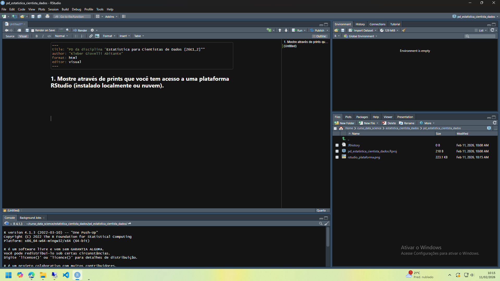
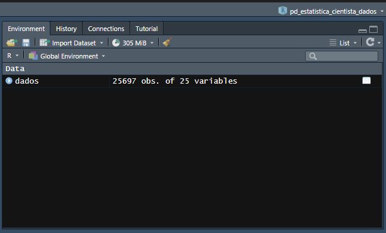
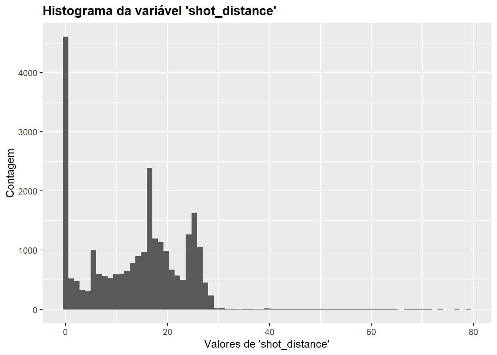
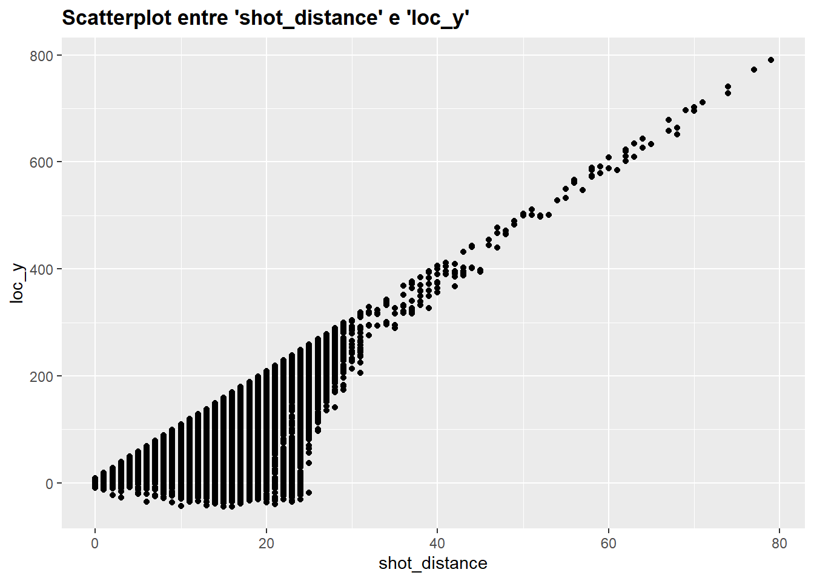
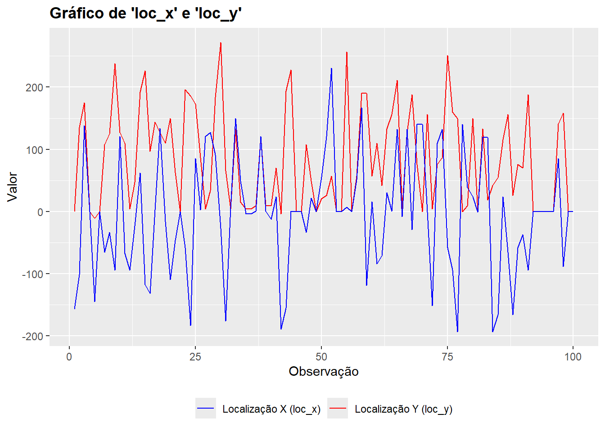

library(tidyverse)
library(skimr)
# definir a vírgula como separador de decimal
options(OutDec = ",")PD da disciplina ‘Estatística para Cientistas de Dados [26E1_2]’
1. Mostre através de prints que você tem acesso a uma plataforma RStudio (instalado localmente ou nuvem).

2. Escolha uma base de dados para realizar esse projeto. Essa base de dados será utilizada durante toda sua análise. Essa base necessita ter 4 (ou mais) variáveis de interesse. Caso você tenha dificuldade para escolher uma base, o professor da disciplina irá designar para você.
Resposta: a base escolhida foi uma base do Kaggle que contém arremessos (em jogos de basquete da NBA) realizados pelo falecido jogador Kobe Bryant. A base possui 30.697 arremessos, representados pelas linhas, e 25 variáveis, que estão nas colunas. O resultado da função skim() abaixo apresenta algumas informações sobre as variáveis.
# carregar os dados
dados <- read_delim("data.csv", delim=",", show_col_types = F)
# gerar algumas descricoes dos dados
skim(dados)| Name | dados |
| Number of rows | 30697 |
| Number of columns | 25 |
| _______________________ | |
| Column type frequency: | |
| character | 10 |
| Date | 1 |
| numeric | 14 |
| ________________________ | |
| Group variables | None |
Variable type: character
| skim_variable | n_missing | complete_rate | min | max | empty | n_unique | whitespace |
|---|---|---|---|---|---|---|---|
| action_type | 0 | 1 | 8 | 34 | 0 | 57 | 0 |
| combined_shot_type | 0 | 1 | 4 | 9 | 0 | 6 | 0 |
| season | 0 | 1 | 7 | 7 | 0 | 20 | 0 |
| shot_type | 0 | 1 | 14 | 14 | 0 | 2 | 0 |
| shot_zone_area | 0 | 1 | 9 | 21 | 0 | 6 | 0 |
| shot_zone_basic | 0 | 1 | 9 | 21 | 0 | 7 | 0 |
| shot_zone_range | 0 | 1 | 7 | 15 | 0 | 5 | 0 |
| team_name | 0 | 1 | 18 | 18 | 0 | 1 | 0 |
| matchup | 0 | 1 | 9 | 11 | 0 | 74 | 0 |
| opponent | 0 | 1 | 3 | 3 | 0 | 33 | 0 |
Variable type: Date
| skim_variable | n_missing | complete_rate | min | max | median | n_unique |
|---|---|---|---|---|---|---|
| game_date | 0 | 1 | 1996-11-03 | 2016-04-13 | 2006-05-04 | 1559 |
Variable type: numeric
| skim_variable | n_missing | complete_rate | mean | sd | p0 | p25 | p50 | p75 | p100 | hist |
|---|---|---|---|---|---|---|---|---|---|---|
| game_event_id | 0 | 1,00 | 249,19 | 150,00 | 2,00 | 110,00 | 253,00 | 368,00 | 659,00 | ▇▇▇▅▁ |
| game_id | 0 | 1,00 | 24764065,87 | 7755174,89 | 20000012,00 | 20500077,00 | 20900354,00 | 29600474,00 | 49900088,00 | ▇▁▁▂▁ |
| lat | 0 | 1,00 | 33,95 | 0,09 | 33,25 | 33,88 | 33,97 | 34,04 | 34,09 | ▁▁▁▅▇ |
| loc_x | 0 | 1,00 | 7,11 | 110,12 | -250,00 | -68,00 | 0,00 | 95,00 | 248,00 | ▂▃▇▅▂ |
| loc_y | 0 | 1,00 | 91,11 | 87,79 | -44,00 | 4,00 | 74,00 | 160,00 | 791,00 | ▇▅▁▁▁ |
| lon | 0 | 1,00 | -118,26 | 0,11 | -118,52 | -118,34 | -118,27 | -118,17 | -118,02 | ▂▃▇▅▂ |
| minutes_remaining | 0 | 1,00 | 4,89 | 3,45 | 0,00 | 2,00 | 5,00 | 8,00 | 11,00 | ▇▅▅▃▅ |
| period | 0 | 1,00 | 2,52 | 1,15 | 1,00 | 1,00 | 3,00 | 3,00 | 7,00 | ▇▅▃▁▁ |
| playoffs | 0 | 1,00 | 0,15 | 0,35 | 0,00 | 0,00 | 0,00 | 0,00 | 1,00 | ▇▁▁▁▂ |
| seconds_remaining | 0 | 1,00 | 28,37 | 17,48 | 0,00 | 13,00 | 28,00 | 43,00 | 59,00 | ▇▇▇▇▆ |
| shot_distance | 0 | 1,00 | 13,44 | 9,37 | 0,00 | 5,00 | 15,00 | 21,00 | 79,00 | ▇▇▁▁▁ |
| shot_made_flag | 5000 | 0,84 | 0,45 | 0,50 | 0,00 | 0,00 | 0,00 | 1,00 | 1,00 | ▇▁▁▁▆ |
| team_id | 0 | 1,00 | 1610612747,00 | 0,00 | 1610612747,00 | 1610612747,00 | 1610612747,00 | 1610612747,00 | 1610612747,00 | ▁▁▇▁▁ |
| shot_id | 0 | 1,00 | 15349,00 | 8861,60 | 1,00 | 7675,00 | 15349,00 | 23023,00 | 30697,00 | ▇▇▇▇▇ |
A seguir, é apresentada uma descrição de cada variável da base, segundo o Kaggle:
action_type: diferentes tipos de arremesso (57 tipos diferentes);
combined_shot_type: tipos gerais de arremesso (6 tipos diferentes);
game_event_id: identificador de jogo. O Kaggle não deixa claro do que se trata esse campo, pois ele não é único, podendo se repetir em vários jogos;
game_id: identificador único de cada jogo;
lat: latitude da quadra em que o jogo ocorreu;
lon: longitude da quadra em que o jogo ocorreu;
loc_x: local no eixo-x da quadra de onde o arremesso foi feito (-250 = parte inferior direita da quadra até 250 = parte superior direita da quadra, onde a cesta está no centro do lado direito);
loc_y: local no eixo-y da quadra de onde o arremesso foi feito (-40 = lado direito até 900 = lado esquerdo, onde a cesta está no centro do lado direito);
minutes_remaining: minutos faltando para terminar o período (máximo de 12);
period: período do jogo (em geral, possui 4, mas podem ser mais em caso de empate);
playoffs: indicador se o jogo é de playoffs (1) ou não (0);
season: temporada da NBA em que o jogo ocorreu (1996-97 até 2015-16);
seconds_remaining: segundos faltando para terminar o período;
shot_distance: distância (em metros) de onde o arremesso foi feito;
shot_type: 2-pontos ou 3-pontos;
shot_zone_area: área da quadra de onde o arremesso foi feito (BC, C, LC, L, RC, R);
shot_zone_basic: zona da quadra de onde o arremesso foi feito (total de 7);
shot_zone_range: intervalo (em metros) de onde o arremesso foi feito (<8, 8-16, 16-24, 24+, fundo da quadra);
team_id: sempre 1610612747, que é o id do único time em que Kobe Bryant jogou (Los Angeles Lakers);
team_name: sempre Los Angeles Lakers;
game_date: data em que ocorreu o jogo;
matchup: id dos times que jogaram a partida;
opponent: id do time adversário;
shot_made_flag: indica se o arremesso teve êxito (1) ou não (0); e
shot_id: identificador único de cada arremesso.
Nota-se que há 10 colunas no formato de caracter, 1 coluna no formato de data e 14 colunas numéricas. As variáveis identificadoras (game_event_id, game_id, team_id e shot_id), apesar de terem sido carregadas como numéricas e terem as suas estatísticas descritivas calculadas anteriormente, estas estatísticas não tem relevância, pois estas variáveis servem apenas para identificar os dados.
A única variável com valores faltantes (NA) é a variável shot_made_flag, que possui 5.000 valores faltantes. Isso decorre dessa base ter sido usada em uma competição de machine learning, na qual o objetivo era utilizar as demais variáveis para prever estes valores faltantes. Assim, para fins deste trabalho, essas observações serão excluídas, conforme o código abaixo.
dados <- dados %>% drop_na()3. Explique qual o motivo para a escolha dessa base e explique os resultados esperados através da análise.
Resposta: escolhi esta base porque acompanho jogos de basquete e acho interessante avaliar estatísticas esportivas. Eu espero, por meio da estatística descritiva, identificar:
Qual a distância da cesta em que Kobe Bryant mais arriscava arremessos; e
Se o aproveitamento dele mudava nos playoffs em comparação com a temporada regular.
4. Carregue a base para o RStudio e comprove o carregamento tirando um print da tela com a base escolhida presente na área “Ambiente”/Enviroment. Detalhe como você realizou o carregamento dos dados.
Resposta:

A base foi carregada da seguinte forma:
Foi acessado o site contendo a base de dados: https://www.kaggle.com/competitions/kobe-bryant-shot-selection/data;
Após efetuar login no site, o arquivo .zip foi baixado e descompactado na pasta do projeto do R na qual este trabalho foi desenvolvido;
O arquivo foi aberto no Bloco de Notas e verificou-se que as colunas estavam separadas por vírgula. Assim, foi utilizada a função
read_delim(), da coletânea de pacotestidyverse, com o argumentodelim = ",". O código completo utilizado para baixar os dados foi o seguinte:
dados <- read_delim("data.csv", delim=",", show_col_types = F).
5. Instale e carregue os pacotes de R necessários para sua análise (mostre o código necessário):
a. tidyverse
b. ggplot
c. summarytools
Resposta:
install.packages("tidyverse")
install.packages("ggplot2")
install.packages("summarytools")library(tidyverse)
library(ggplot2)
library(summarytools)6. Escolha outros pacotes necessários, aponte sua necessidade e instale e carregue (mostrando o código necessário).
library(skimr)
library(DT)
library(psych)7. Aplique uma função em R que seja útil para sua análise e mostre.
Resposta: o código a seguir tem por objetivo calcular o aproveitamento de Kobe Bryant nos arremessos da temporada regular (playoffs = 0) e nos playoffs (playoffs = 1), a fim de verificar se há diferença. O aproveitamento foi calculado na variável proporcao_acertos, que representa a razão entre o número de acertos e o número de arremessos tentados.
dados_playoffs <- dados %>%
group_by(playoffs) %>%
summarise(
total_shots = n(),
total_shot_made_flag = sum(shot_made_flag),
proporcao_acertos = total_shot_made_flag/total_shots * 100
)
dados_playoffs# A tibble: 2 × 4
playoffs total_shots total_shot_made_flag proporcao_acertos
<dbl> <int> <dbl> <dbl>
1 0 21939 9794 44.6
2 1 3758 1671 44.5Os resultados indicaram que o aproveitamento na temporada regular foi de 44,6%, ligeiramente acima do aproveitamento nos playoffs (44,5%). Essa diferença é pequena, mas pode ser decorrente do padrão de jogo dos playoffs, quando a defesa é mais intensa e os arremessos costumam ser mais contestados, reduzindo um pouco a eficiência.
8. Escolha uma variável de seu banco de dados e calcule:
a. a média para todos os eventos
b. o desvio padrão
c. os quantis: 25% a 75%
Resposta: a variável escolhida foi minutes_remaining. O código a seguir calcula a média, desvio padrão e os quantis 25% e 75%.
# calcular as métricas
media_minutes_remaining <- dados$minutes_remaining %>% mean()
std_minutes_remaining <- dados$minutes_remaining %>% sd()
quantis <- dados$minutes_remaining %>% quantile(probs = c(0.25, 0.75))
# imprimir na tela
paste0("Média: ", round(media_minutes_remaining,2))
paste0("Desvio padrão: ", round(std_minutes_remaining,2))
paste0("Quantil 25%: ", as.vector(quantis[1]))
paste0("Quantil 75%: ", as.vector(quantis[2]))[1] "Média: 4,89"[1] "Desvio padrão: 3,45"[1] "Quantil 25%: 2"[1] "Quantil 75%: 8"9. Utilizando o pacote summarytools (função descr), descreva estatisticamente a sua base de dados.
Resposta: a função descr() já remove, automaticamente, as variáveis não numéricas e calcula as estatísticas descritivas apenas para as demais. O problema é que a base em questão possui algumas variáveis numéricas que também devem ser removidas:
variáveis identificadoras: game_event_id, game_id, team_id e shot_id; e
variáveis numéricas categóricas (variáveis binárias, que representam categorias): playoffs e shot_made_flag.
Portanto, antes de aplicar a função descr(), foi criado uma nova base de dados apenas com as variáveis numéricas cujas estatísticas descritivas têm significado, denominada dados_num, e a função descr() foi aplicada nela. O resultado é mostrado a seguir.
# selecionar as variáveis numéricas mas excluir as variáveis identificadoras e as variáveis categóricas
dados_num <- dados %>% select(
lat, loc_x, loc_y, lon, minutes_remaining, period, seconds_remaining, shot_distance
)
# gerar estatísticas descritivas
est_descr <- descr(dados_num)
# arredondar para duas casas decimais
est_descr <- round(est_descr, 2)
# criar uma tabela com scroll
datatable(
est_descr,
options = list(
scrollX = TRUE,
scrollY = "450px",
pageLength = 10,
dom = 't'
),
)10. Escolha uma variável e crie um histograma. Justifique o número de bins usados. A distribuição dessa variável se aproxima de uma “normal”? Justifique.
Resposta: a variável escolhida foi shot_distance. O código abaixo gera o histograma da variável. O número de bins (k) foi escolhido por meio da estatística de Freedman-Diaconis, conhecida por ser mais robusta para distribuições assimétricas, que consiste no seguinte cálculo:
\(k = \frac{max(x) - min(x)}{h}\)
onde:
\(h = 2\frac{IQR}{n^{1/3}}\)
IQR é o intervalo interquartil e n é o número de observações.
O código a seguir calcula a estatística de Freedman-Diaconis (variável bins_fd) e, em seguida, gera o histograma.
# calcular o número de bins segundo a estatística de Freedman-Diaconis
bins_fd <- nclass.FD(dados$shot_distance)
# fazer o histograma
ggplot(dados, aes(x=shot_distance)) +
geom_histogram(bins=bins_fd) +
ggtitle("Histograma da variável 'shot_distance'") +
labs(y = "Contagem", x = "Valores de 'shot_distance'") +
theme(
plot.title = element_text(face = "bold")
)
O gráfico mostra que Kobe Bryant arriscava mais arremessos de curta distância da cesta (próximos de zero). A variável não apresenta distribuição “normal”, pois o histograma revela assimetria: a moda está deslocada para a cauda esquerda, com concentração de valores baixos e uma cauda longa à direita. Diferentemente da distribuição “normal”, que é simétrica e tem formato de sino com a moda no centro.
11. Calcule a correlação entre todas as variáveis dessa base. Quais são as 3 pares de variáveis mais correlacionadas?
Resposta: para esta questão, primeiro foi calculada a correlação de Pearson entre as variáveis numéricas contínuas, que estão na base dados_num. Os resultados são mostrados abaixo.
# calcular a correlação de pearson
matriz_cor <- cor(dados_num, use = "complete.obs")
# converter em data.frame
df_cor <- as.data.frame(round(matriz_cor, 2))
# criar uma tabela com scroll
datatable(
df_cor,
options = list(
scrollX = TRUE,
scrollY = "400px",
pageLength = 10,
dom = 't'
),
colnames = c('Variável' = 1)
) %>% formatRound(columns = c(1:ncol(df_cor)), dec.mark = ",")A tabela anterior mostra que a correlação entre as variáveis lat e loc_y e lon e loc_x é perfeita (-1 e 1, respectivamente). Isso indica redundância total, onde ambos os pares descrevem a mesma localização geográfica em sistemas de coordenadas diferentes. Para simplificar a base, optou-se por eliminar as variáveis lat e lon, conforme demonstrado no código abaixo. Com isso, a base dados_num foi refeita, assim como as correlações.
# eliminar as colunas desnecessaria
dados <- dados %>% select(-lat, -lon)
# selecionar as variáveis numéricas mas excluir as variáveis identificadoras e as variáveis categóricas
dados_num <- dados %>% select(
loc_x, loc_y, minutes_remaining, period, seconds_remaining, shot_distance
)
# calcular a correlação de pearson
matriz_cor <- cor(dados_num, use = "complete.obs")
# converter em data.frame
df_cor <- as.data.frame(round(matriz_cor, 2))
# criar uma tabela com scroll
datatable(
df_cor,
options = list(
scrollX = TRUE,
scrollY = "300px",
pageLength = 10,
dom = 't'
),
colnames = c('Variável' = 1)
) %>% formatRound(columns = c(1:ncol(df_cor)), dec.mark = ",")Como a correlação de Pearson não é a mais indicada para o medir a correlação entre variáveis binárias, a correlação entre estas variáveis (playoffs e shot_made_flag) foi feita por meio do cálculo do Coeficiente Phi (\(\phi\)). O resultado, abaixo, mostra que não há correlação entre estas variáveis (resultado_phi).
resultado_phi <- phi(table(dados$playoffs, dados$shot_made_flag))
print(resultado_phi)[1] 0Por fim, falta calcular a correlação entre as variáveis binárias e as variáveis contínuas. Esta correlação é chama Ponto-Biserial e o valor é exatamente o mesmo da Correlação de Pearson, mas a interpretação é focada em grupos, verificando a distância entre as médias dos dois grupos (0 e 1). O código a seguir calcula a Correlação Ponto-Biserial entre as variáveis playoffs e shot_made_flag e as variáveis contínuas.
# criar vetor com os nomes das variaveis continuas
variaveis_continuas <- c("loc_x", "loc_y", "minutes_remaining", "period", "seconds_remaining", "shot_distance")
# criar vetor com os nomes das variaveis binarias
variaveis_binarias <- c("playoffs", "shot_made_flag")
# criar lista vazia para armazenar os resultados
lista_cor <-list()
for(i in variaveis_continuas){
for(w in variaveis_binarias){
lista_cor[[i]][[w]] <- round(as.vector(cor(dados[,i], dados[,w])),2)
}
}
# criar uma tibble
df_cor_2 <- bind_rows(lista_cor)
# criar a coluna com nome das variaveis e colocar ela no inicio
df_cor_2 <- df_cor_2 %>%
mutate(var = names(lista_cor)) %>%
relocate(var, .before = 1)
# criar uma tabela com scroll
datatable(
df_cor_2,
options = list(
scrollX = TRUE,
scrollY = "300px",
pageLength = 10,
dom = 't'
),
colnames = c('Variável' = 2),
rownames = F
) %>% formatRound(columns = c(2:ncol(df_cor_2)), dec.mark = ",")O resultado indicou que os três pares de maior correlação foram:
shot_distance e loc_y (0,82). A correlação é alta e positiva. Indica que a distância do arremesso está positivamente correlacionada com a localização no eixo-y da quadra em que o arremesso ocorreu. Quando maior a distância do arremesso, maior a localização no eixo-y em que o arremesso foi realizado. Esta alta correlação é esperada, uma vez que a localização do arremesso no eixo-y influencia de forma significativa a distância do arremesso;
shot_made_flag e shot_distance (-0,20). A correlação Ponto-Biserial foi negativa e fraca. Como a shot_made_flag é binária, a interpretação é de que o grupo 1 (arremesso com êxito) em shot_made_flag apresenta tendência a valores mais baixos na variável shot_distance, em comparação com o grupo 0 (arremesso sem êxito). Ou seja, arremessos de curta distância estiveram associados com mais arremessos bem sucedidos. Contudo, a magnitude do efeito é pequena, sugerindo que a variável binária possui um poder preditivo limitado sobre a variável contínua neste contexto; e
minutes_remaining e loc_y (-0,08). A correlação é fraca e mostra que conforme os minutos para terminar o período de jogo diminuem (ou seja, o fim do período se aproxima), a distância aumentaria. Mas a tendência é fraca para ser considerada uma regra.
12. Crie um scatterplot entre duas variáveis das resposta anterior. Qual a relação da imagem com a correlação entre as variáveis.
Resposta: foram escolhidas as variávels shot_distance e loc_y para elaboração do scatterplot, conforme apresentado abaixo.
ggplot(dados, aes(x=shot_distance, y=loc_y)) +
geom_point() +
ggtitle("Scatterplot entre 'shot_distance' e 'loc_y'") +
theme(
plot.title = element_text(face = "bold")
)
O gráfico de dispersão confirma uma correlação positiva forte entre as variáveis, representada por uma inclinação ascendente constante. Na prática, isso indica que o aumento na coordenada vertical (loc_y) é o principal fator para o aumento da distância total do arremesso (shot_distance). Essa relação quase linear sugere que a distância é altamente dependente da posição do jogador em relação à linha de fundo da quadra.
13. Crie um gráfico linha de duas das variáveis. Acrescente uma legenda e rótulos nos eixos.
Resposta: as variáveis escolhidas foram loc_x e loc_y. Como a base de dados possui 25.697 observações, optou-se por utilizar apenas as primeiras 100 observações para criação do gráfico, a fim de permitir melhor visualização dos dados. O gráfico é apresentado abaixo.
ggplot(dados[c(1:100),]) +
geom_line(aes(y = loc_y, x=c(1:nrow(dados[c(1:100),])), group=1, color = "Localização Y (loc_y)")) +
geom_line(aes(y = loc_x, x=c(1:nrow(dados[c(1:100),])), group=1, color = "Localização X (loc_x)")) +
scale_color_manual(values = c("Localização Y (loc_y)" = "red", "Localização X (loc_x)" = "blue")) +
labs(color = NULL, title = "Gráfico de 'loc_x' e 'loc_y'", x = "Observação", y = "Valor") +
theme(
legend.position = "bottom",
plot.title = element_text(face = "bold")
)